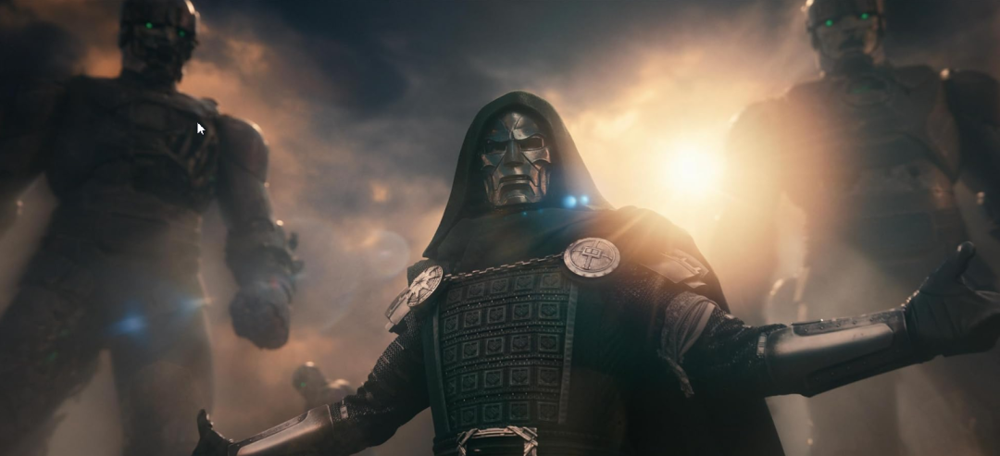
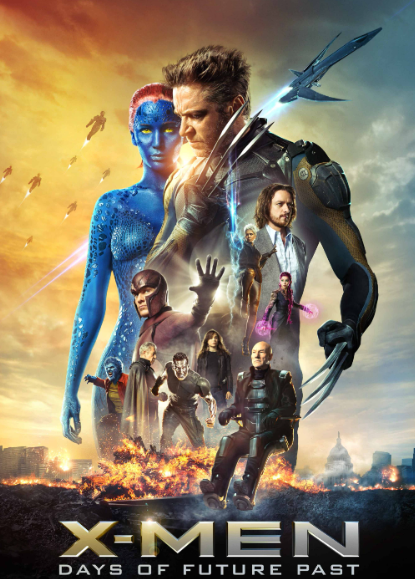
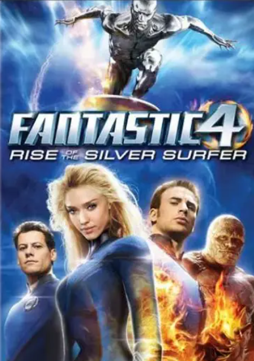

比北美早48个小时，中国观众会成为全球第一批看到这部片的人。这次钢铁侠要回来了，但他这次要毁灭一切。
小罗伯特·唐尼，片酬天花板，MCU的爹，这次饰演的不是托尼·斯塔克（钢铁侠），而是饰演终极反派毁灭博士维克多·冯·杜姆。

X战警全员到齐。帕特里克·斯图尔特的X教授，伊恩·麦克莱恩的万磁王，詹姆斯·麦斯登的镭射眼，凯尔塞·格拉玛的野兽，艾伦·卡明的夜行者，丽贝卡·罗梅恩的魔形女，查宁·塔图姆的牌皇，那个被福克斯雪藏了十年的牌皇，终于要正式登场了。

神奇四侠也来了。佩德罗·帕斯卡的神奇先生，凡妮莎·柯比的隐形女侠，约瑟夫·奎恩的霹雳火，艾邦·摩斯-巴克拉赫的石头人。这是他们第一次正式和复联主线汇合。

根据最新曝光的海报与信息，斯嘉丽·约翰逊饰演的黑寡妇、克里斯·埃文斯饰演的美国队长等初代复仇者确认回归！
复联 3、4 原班导演回归，故事承接前面《洛基》《奇异博士 2》开创的多元宇宙。本片不是最终篇：故事结局会把破碎的多元宇宙缝合，诞生 “斗界”，为《复联6：秘密战争》决战铺好舞台，而电影的结局，英雄们会遭遇重大挫败，大量角色面临生死危机。
《复仇者联盟5》承载着太多期望：它既要收束多元宇宙的混乱，又要为未来的MCU指明方向。目前影片尚未上映，豆瓣评分暂未开放，但全网热度已呈燎原之势。
2026年12月16日，就让我们走进电影院，共同见证这场关乎宇宙存亡的终极之战。